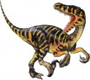
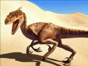

Авимим.
Классификация: тероподы; Где и когда обитал: Монголия, Центральная Азия; поздний меловой период; Ближайшие сородичи: струтиомим; Кем назван: Сергей Курзанов, 1981; Характеристики: плотоядное, на двух конечностях, около 1,5 м длиной.
Аллозавр..
Классификация: тероподы; Где и когда обитал: Северная Америка; поздний юрский период; Ближайшие сородичи: афровенатор, мегалозавр; Кем назван: Отниел Марш, 1877; Характеристики: плотоядное, на двух конечностях, около 12 м длиной.
Апатозавр.
Классификация: зауроподы; Где и когда обитал: Средний Запад Северной Америки; поздний юрский период; Ближайшие сородичи: барозавр, брахиозавр, цетиозавр, диплодок, сальтазавр; Кем назван: Отниел Марш, 1877 Характеристики: растительноядное, на четырех конечностях, около 21 м длиной.
Афровенатор..
Классификация: тероподы; Где и когда обитал: Северная Африка; ранний меловой период; Ближайшие сородичи: аллозавр, мегалозавр; Кем назван: Поль Серено, 1995 Характеристики: плотоядное, на двух конечностях, около 10 м длиной.
Брахиозавр.
Классификация: зауроподы; Где и когда обитал: Средний Запад Северной Америки и Танзания, Восточная Африка; поздний юрский период; Ближайшие сородичи: апатозавр, барозавр, цетиозавр, диплодок, сальтазавр; Кем назван: Элмер Риггс, 1903 Характеристики: растительноядное, на четырех конечностях, около 22 м длиной.
Велоцираптор..
лассификация: тероподы; Где и когда обитал: Монголия, Центральная Азия; поздний меловой период; Ближайшие сородичи: компсогнат, дейноних; Кем назван: Генри Осборн, 1924 Характеристики: плотоядное, на двух конечностях, 2 м длиной. Дейноних..
Классификация: зауроподы; Где и когда обитал: Средний Запад Северной Америки и Танзания, Восточная Африка; поздний юрский период; Ближайшие сородичи: апатозавр, барозавр, цетиозавр, диплодок, сальтазавр; Кем назван: Элмер Риггс, 1903 Характеристики: растительноядное, на четырех конечностях, около 22 м длиной.
Лексовизавр.
Классификация: зауроподы; Где и когда обитал: Средний Запад Северной Америки и Танзания, Восточная Африка; поздний юрский период; Ближайшие сородичи: апатозавр, барозавр, цетиозавр, диплодок, сальтазавр; Кем назван: Элмер Риггс, 1903 Характеристики: растительноядное, на четырех конечностях, около 22 м длиной.
Тираннозавр..
Классификация: зауроподы;
Где и когда обитал: Средний Запад Северной Америки и Танзания, Восточная Африка; поздний юрский период;
Ближайшие сородичи: апатозавр, цетиозавр;
Кем назван: Элмер Риггс, 1903
Характеристики: растительноядное, на четырех конечностях, около 22 м длиной.